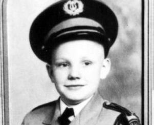

Nacimiento: 5 de agosto de 1930 en Wapakoneta, Ohio, Estados Unidos.
Educación: Se graduó en ingeniería aeronáutica de la Universidad de Purdue en 1955.
Carrera en la NASA: Fue piloto de pruebas y astronauta; comandante del Apollo 11.
Primer alunizaje: El 20 de julio de 1969, fue el primer hombre en caminar sobre la Luna.
Familia: Estuvo casado con Janet Shearon, con quien tuvo tres hijos: Karen, Mark y Eric. Luego, se casó con Carol Held Knight en 1994.
Carrera posterior: Enseñó ingeniería aeroespacial después de dejar la NASA en 1971.
Fallecimiento: 25 de agosto de 2012 a los 82 años por complicaciones tras una cirugía cardíaca.
Neil Armstrong, nacido el 5 de agosto de 1930 en Wapakoneta, Ohio, fue un piloto de pruebas, ingeniero y astronauta estadounidense conocido por ser el primer hombre en caminar sobre la Luna. Graduado en ingeniería aeronáutica por la Universidad de Purdue, su carrera lo llevó a trabajar como piloto en la NASA antes de ser seleccionado como comandante del Apollo 11, misión que culminó el 20 de julio de 1969 con su histórico alunizaje. Tras dejar la NASA en 1971, se dedicó a la enseñanza como profesor de ingeniería aeroespacial. En su vida personal, tuvo dos matrimonios y tres hijos, aunque sufrió la pérdida de su hija Karen a temprana edad. Armstrong falleció el 25 de agosto de 2012, dejando un legado como símbolo de la exploración y la valentía humana.
El contexto histórico en el que Neil Armstrong vivió y logró su hazaña estuvo marcado por la "Guerra Fría" y la intensa "carrera espacial" entre Estados Unidos y la Unión Soviética. Durante las décadas de 1950 y 1960, ambas potencias competían por demostrar su superioridad tecnológica y científica, lo que llevó a avances significativos en la exploración espacial. La Unión Soviética había tomado la delantera al lanzar el primer satélite, el Sputnik, en 1957, y al enviar al primer humano al espacio, Yuri Gagarin, en 1961. En respuesta, Estados Unidos intensificó sus esfuerzos con el programa Apollo, cuyo objetivo era llevar a un hombre a la Luna y devolverlo a salvo.